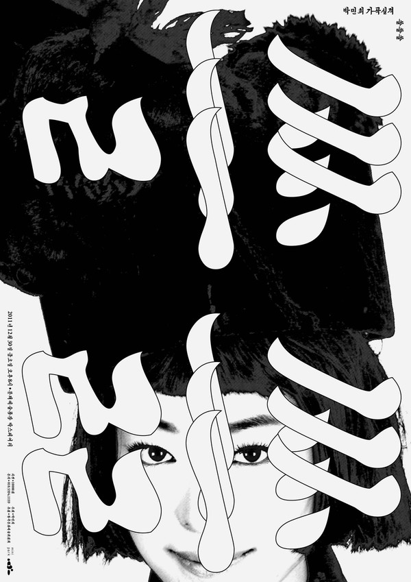
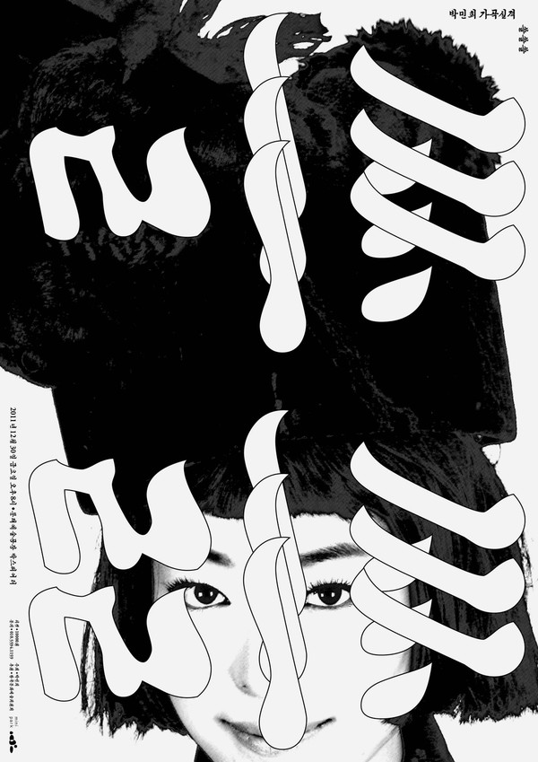

Tok Tok

Heechan Lee is interested in creating visual creations in various media and decided to talk to Moonsick Gang.
Moonsick Gang is interested in creating a new graphic form by juxtaposing other objects in a metaphorical way.
사회로 진출하는 초년생 디자이너들이 포트폴리오를 제작하는데에 있어 어떤 점을 중요하게 생각해야 한다고 생각하시나요?
기술적인 기본기와 자신이 잘 이끌어 나갈 수 있는 장점이 드러나는 것이 중요하다고 생각한다.
어떻게 해서 진로 방향을 정하게 되었는지 여쭤보고 싶습니다.
진로를 선택하는 과정에는 많은 고민이 있었지만, 그냥, 하다보니 그렇게 됐다.
졸업 이후에 어떻게 첫 직장/일을 갖게 되었는지 여쭤보고 싶습니다.
학생 때 이런저런 작업물을 만들고 책을 출판하기도 했는데, 그런 것들을 보고 일이 생기기 시작했다.
디자이너가 진로 방향을 설정하는데 있어서 어떤 부분을 중요하게 생각해야 한다고 생각하시나요?
개인의 성향을 잘 파악하는 것이 중요하다고 생각한다. 사람을 만나는 것을 좋아하는지, 새로운 일을 벌이는 것이 좋은지, 아니면 묵묵히 역할을 맡는 성격인지 등등. 그에 따라 일 하는 방식, 규모같은 것을 선택할 때 수월하다.
학교를 졸업하셨을 때를 돌이켜보면, 그 당시에 알았으면 하는 것이 있나요?
오히려 모르는게 있기 때문에 더 열심히 했던 것도 있다. 모르면 모르기 때문에 즐거운 부분이 있다.
처음으로 작업했던 프로젝트에 대해 여쭤보고 싶습니다.
현대 미술가 박민희 씨가 작업을 의뢰하였다. 공연 프로그램의 포스터였는데, 아직도 나에게 중요하고 소중한 작업이다.
현재 인천국제공항에서 전시중인 영상/NFT 작업을 흥미롭게 보았습니다. 이 작업에 대해 설명해주실 수 있나요?
A라는 글자 작업 시리즈이다. 캐릭터 처럼 생명을 부여받은 A는 글자의 특성을 반영하고 있다. 글자가 '상황'에 놓여진 것을 가정하고 만들고 있다.
맥주캔과 서적에서 포스터와 앨범아트 등, 항상 매체의 경계를 뛰어넘는 작업을 보여주시고 있습니다. 서로 다른 매체의 영역을 넘나들면서 발생하는 고민이나 딜레마가 있나요?
매체의 영역이라는 것이 애초에 있다고 생각하지 않기 때문에 한 카테고리 안의 일이라고 생각한다. 결국 지금까지 내가 하는건 그래픽디자이너로서 시각적 디렉션을 만드는 정도의 일이고, 매번 달라지는 클라이언트와 부드럽게 협업하는 방식에 대한 고민을 하곤 한다.
디자인 프로세스에서 고민을 해결하는 방법/실마리에 대해 여쭤보고 싶습니다.
그래픽디자이너가 일을 하기 위해서는 클라이언트가 존재하고, 결국 그 존재와 어떻게 합의를 하는지가 가장 중요하다. 그래서 클라이언트가 원하는 방향성을 잘 이해하려고 노력한다. 상황은 매번 다르지만 문제를 풀기위한 답은 그 것에 있다.
수많은 디자이너들이 매년마다 전 세계의 대학에서 배출되는 상황에서 어떻게 자신을 다른 디자이너들로부터 차별화할 수 있나요?
수많은 디자이너들보다 더 많은 일이 세상에 벌어지고 있다. 다른 사람이 아닌 내가 필요한 일을 계속 찾아다니면 된다. 차별화는 남을 의식하면서 만들어지는 것이 아닌, 스스로 답을 찾고 확신을 얻을 때 비로소 드러난다고 생각한다.
평소 다양한 분야의 사람들(뮤지션, 패션 업계 등등)과 교류를 하시면서 그들과 다양한 작업을 하시는데, 그런 교류를 맺을 수 있는 방법에 대해 여쭤보고 싶습니다.
특별한 방법이 있을까? 방법이 있어서 그렇게만 한다면 그건 오래가지 못할 것이다. 친구를 만나는 것과 비슷하다고 생각한다. 친분의 개념이 아닌, 함께 무언가를 해보고 싶다는 생각이 서로 들게끔. 그러려면 복합적인 서로의 노력이 필요한거 같다.
 
